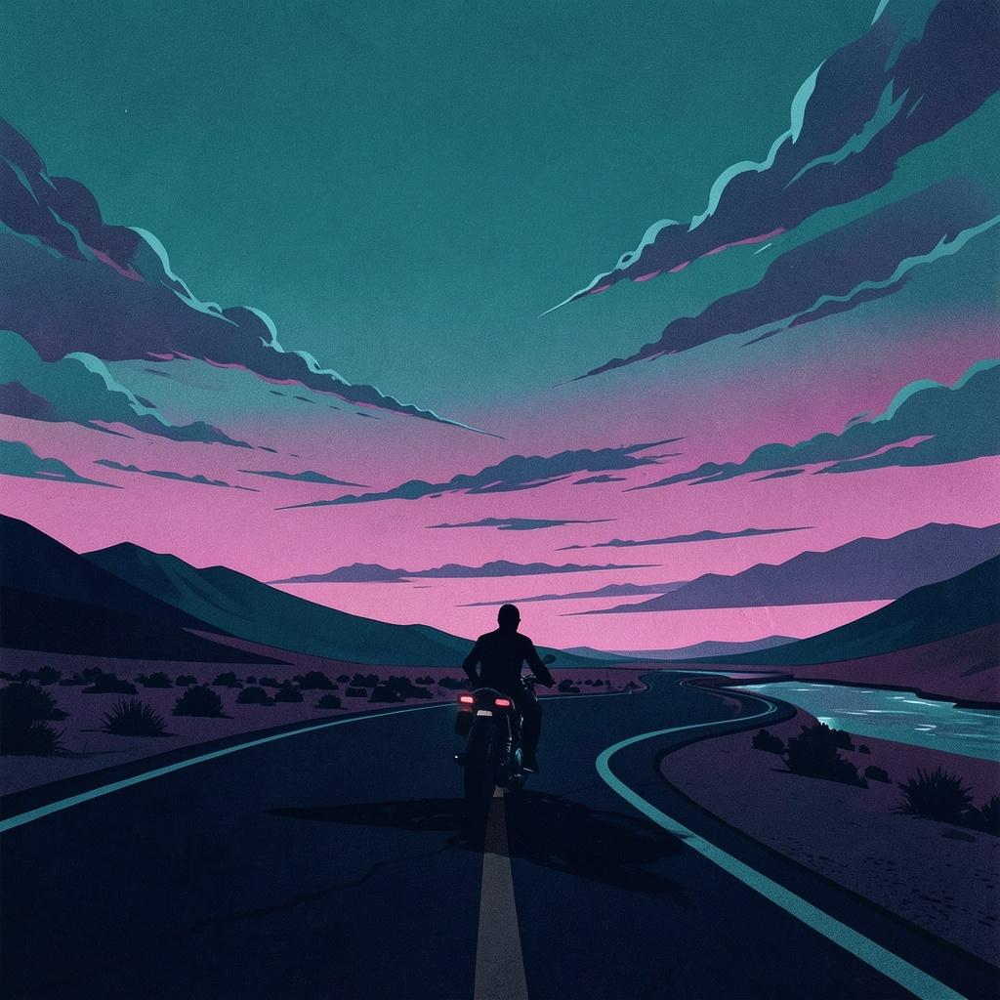
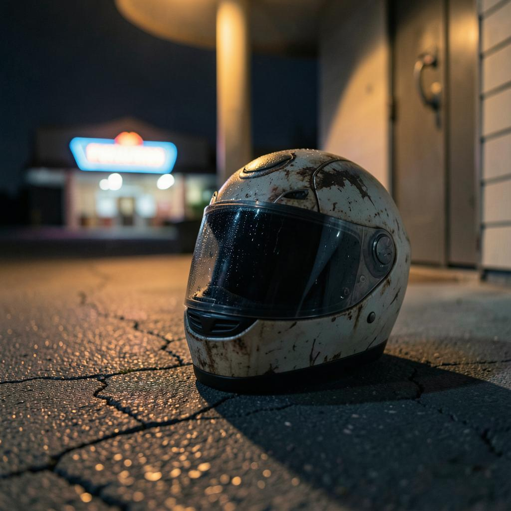

Every journey has a story.
Every story has a song.
Every journey leaves behind memories.
Some are captured through photographs. Some are shared through videos. And some become songs.
The Retired To Ride music collection is inspired by motorcycles, friendships, adventure and the freedom of exploring the world on two wheels.
Welcome to the soundtrack of the journey.

The song that captures the Retired To Ride spirit.
Every journey has challenges. Every road has its moments. But the adventure continues... and we'll keep riding anyway.
Listen On Suno
The newest soundtrack from Retired To Ride.
Inspired by the freedom of the open highway, long distance touring and the adventures waiting around the next corner.
Listen On SunoExplore songs inspired by roads travelled, friendships made and adventures remembered.
Retired To Ride began with a passion for motorcycles, exploring new places and sharing adventures with others.
Along the way, another passion developed: creating music inspired by those unforgettable journeys.
Every mile travelled. Every mountain pass. Every friendship. Every sunrise. Every challenge.
They all leave their mark on the songs created along the way.
The Retired To Ride music collection is a celebration of adventure, friendship and the belief that the ride never gets old.
The adventure doesn't stop here. Explore more of the Retired To Ride story.
Explore Adventures Hall Of Fame Touring Awards Follow The Music